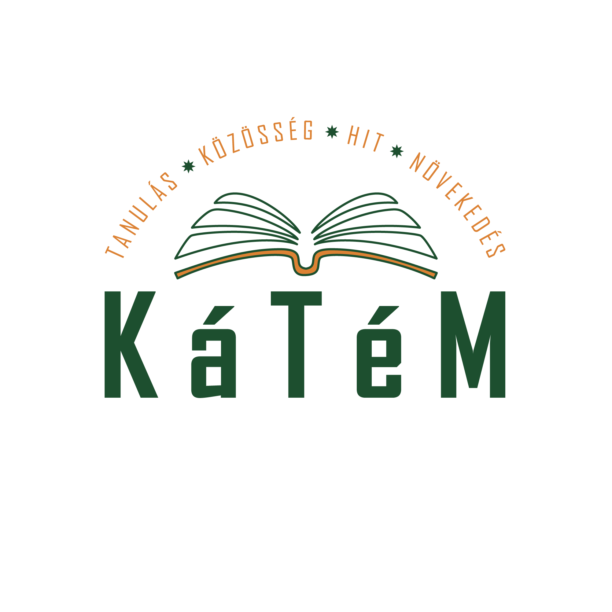

Isten hozott a KáTéM Hivatalos Oldalán!
„Tanítsd a gyermeket, mely úton járjon: még ha megöregszik, akkor sem távolodik el attól.” Péld 22,6
📌 Közelgő eseményeink
Események betöltése...
Miért KáTéM?
Az Ige és a hitvallás nem változik. A körülöttünk levő világ és a benne felnővő gyerekeink azonban nagyon. A konfirmációs felkészítők témái és az alkalmazott módszerek így állandó újragondolásra szorulnak. Hogyan beszéljünk úgy a mai fiataloknak az Isten szerinti életről, hogy az változást hozzon életükbe, és beépüljenek gyülekezeteinkbe? A KáTéM erre a kérdésre adott válasz. Egyszerre módszer és több évre kidolgozott anyag a hit alapkérdéseiről a Heidelbergi Káté alapján.
A KáTéM története
12 éve, 2014-ben indultunk el ezen az úton. Többször újraterveztünk útközben. Az akkori kezdeményezők megnézték a Hollandiában akkor használt felkészítő anyagokat. Úgy látták, nálunk valami másra van szükség. A Hulp Oost Europa Alapítvány felkarolta a kezdeményezést. Szakembereket (dr. Bernard van Vreeswijk és Herman van Wijngarden) vontak be a munkába, akik megértve az erdélyi magyar igényeket és a Heidelbergi Kátéhoz való ragaszkodást, saját, a hollandiai ifjúsági munkában (HGJB) szerzett tapasztalataikat is hasznosítva kidolgoztak számunkra egy módszert és egy tantervet. Ez is többször módosult az évek során. Az óraterveket a Kolozsvári Protestáns Teológiai Intézet diákjai írták dr. Kiss Jenő felügyelete alatt dr. Somfalvi Edit tanárnő szakmai irányításával. A lecketervek javítására a módszert kidolgozó szakemberek egy munkacsoportot hoztak létre, amelyben az elmúlt évek során sokan önkénteskedtek. Az óratervek véglegesítésébe egy másik önkéntes csoport is bekapcsolódott. Itt figyelembe vették a gyakorlati tapasztalatokat is. A módszert és az anyagot megismerhették a kolozsvári Protestáns Teológiai Intézet utóbbi 5 évének végzősei, azok az lelkipásztorok, akik részt vettek a Romániai Református Egyház Országos Lelkésztovábbképző Testület elmúlt néhány évben szervezett továbbképzésein, illetve valamelyik bemutatónapon. Magyarországon és Délvidéken is voltak már ilyen bemutatónapok. Hálásak vagyunk Istennek ezért a történetért! Legyen a folyatáson is az ő áldása!
A KáTéM módszertanáról
A KáTéM egyszerre Krisztusközpontú és gyerekközpontú. Célja, hogy a gyerekek Krisztussal kerüljenek kapcsolatba, megszeressék őt, és vele éljenek. Ennek érdekében a sorra kerülő témák egy ívet követnek. A KáTéM nem a kátékérdéseket veszi sorra, hanem a lelki növekedés témáihoz kapcsol egy-egy kátékérdést. Ezáltal a tanítás során „felborul” a kérdések és válaszok eddigi sorrendje. Természetesen így is hiteles összefoglalója a Heidelbergi Káté tanításának. Minden órának saját fókusza van, ehhez társít az óraterv egy igét és egy (néha két) kátékérdést és választ. Ami az órán történik, ennek a fókusznak rendeli alá. A kátéválaszoknak így csak azon elemét, elemeit bontja ki, amik a fókuszra néznek. Meggyőződésünk, hogy a fiatalok jobban megjegyzik ezt az egy üzenetet, mintha a válasz minden elemére figyelniük kellene. A módszer a személyiség mindhárom rétegét (értelem, érzelem, akarat) érinti és bevonja. Gyakorlatias, megszólaltatja és bevonja a fiatalokat. Az, ahogyan a bibliai részt együtt olvassuk és beszélgetünk róla, arra bátorítja őket, hogy ők is elkezdjenek igét olvasni, s abban Isten üzenetét megkeresni. A bevezető beszélgetés vagy foglalkozás célja, hogy a csoportvezető megismerje, hogyan gondolkoznak a csapat tagjai a témáról. Ez segít neki abban, hogy csatlakozni tudjon hozzájuk, és közel vigye hozzájuk az aznapi témát. Minden óra egy alkalmazó gyakorlattal zárul, mely során a fiatalok végiggondolják, mit jelent az aznapi tanítás gyakorlatba ültetése, és milyen változást hoz ez az életükbe. Aki szeretné jobban megismerni a KáTéM módszertanát, szeretettel hívjuk képzéseinkre! Szívesen szervezünk bemutatónapot, ahol erre igény van! Ezekről érdeklődni, az igényt jelezni munkatársainknál lehet, akik elérhetőségét a Kapcsolat címszó alatt találjátok. Várjuk javaslataitokat is!
A KéTéM anyag bemutatása
A KáTéM 5 év anyagát készíti elő. Munkatársaink most is dolgoznak. Az első két év -a konfirmációs előkészítő időszak- a bevezetésről, alapozásról szól. Az azt követő három év anyaga a tanítványságban való elmélyülést szolgálja. Ez utóbbi 3 éves anyag a konfirmáció utáni ifis korosztálynak készül. Az első év („kiskátés” időszak) 26, a második („nagykátés” év) 17 óratervet tartalmaz, így lehetővé teszi az anyag átvételét a virágvasárnapi konfirmáció előtt. Az első év 13. alkalma után egy ismétlő órát képzeltünk el, ezért ugrik egyet a számozás. Nincs 14. lecke, és a számozás 27-ig megy. Itt találod meg a kérdésválogatást. Az óratervek 2 részből állnak: I. az óra előkészítése - a csoportvezető otthoni felkészülését segíti. Ez tartalmazza a kátékérdés/választ (az Erdélyben használt revideált Tavaszy fordítás szerint), az igei részhez választott igehelyet, a fókuszt, rövid leírását az óra üzenetének, valamint egy rövid bemutatását annak, milyen helyzetben szólítja meg fiataljainkat ez a téma. II. óraterv- mely az óra menetét írja le. Az óra imádsággal és énekléssel kezdődik. A bevezető gyakorlat egy játék, feladat vagy beszélgetés, amelynek során a csoportvezető számára világossá válik, hogyan közelítik meg a fiatalok az aznap megbeszélendő témát. Ez a gyakorlat segít csatlakozni a fiatalokhoz és az ő kérdéseikhez a téma kapcsán. Ezt követi a bibliatanulmányozó rész, amely általában szintén beszélgetős, s gyakran egyéni feladatot is tartalmaz, majd ehhez kapcsolódik a káté kérdés/ válasz üzenetének a rövid megfogalmazása. Érdekesség, hogy a válasznak a fókuszhoz kapcsolódó üzenetére tekint a terv. A válaszban található többi üzenetet nem taglalja. Az alkalmazó gyakorlat abban segít, hogy a fiatalok saját életükre alkalmazzák az aznap hallottakat és kipróbálják, hogy mit változtat az életükön az aznap hallott üzenet gyakorlatba ültetése. Az óra imádsággal énekléssel és áldással zárul.
Próbáld ki!
Az alábbi linkre kattintva elolvashatod az első év első óraterveit. Megtekintés Szeretnéd az egész anyagot megkapni? Vedd fel a kapcsolatot a Kapcsolat menüpont alatti elérhetőségeken valamelyik munkatársunkkal. Ugyanitt várjuk visszajelzéseidet is. Megjegyzések: - Még dolgozunk az óraterveken. Örömmel fogadjuk a meglátásokat, javaslatokat. Kérünk, írjatok nekünk. - Az óratervek a magyar református gyülekezetek használatára íródtak. Természetesen más gyülekezetek számára is hasznos lehet. Bátorítunk használatára. - A program irányítói szeretnék tudni, ki is használja a segédletet. Ezért van szükség arra, hogy jelentkezzetek ahhoz, hogy elküldjük az egészet.
Események és Alkalmak
Közelgő események
Múltbéli / Lejárt események
Galéria
Kapcsolat
Dr. Somfalvi Edit teológiai tanár: somfalviedit@proteo.hu
Pitó Zsolt lelkipásztor, koordinátor: katem.kapcsolat@gmail.com
Dr. Bernard van Vreeswijk lelkipásztor, ifjúsági munkás: bjd@vanvreeswijk.nl
⚙️ Szervezői Adminisztráció
➕ Új esemény hozzáadása
🖼️ Új kép feltöltése a Galériába
👥 Új szervezők jóváhagyása
Nincs jóváhagyásra váró regisztráció.